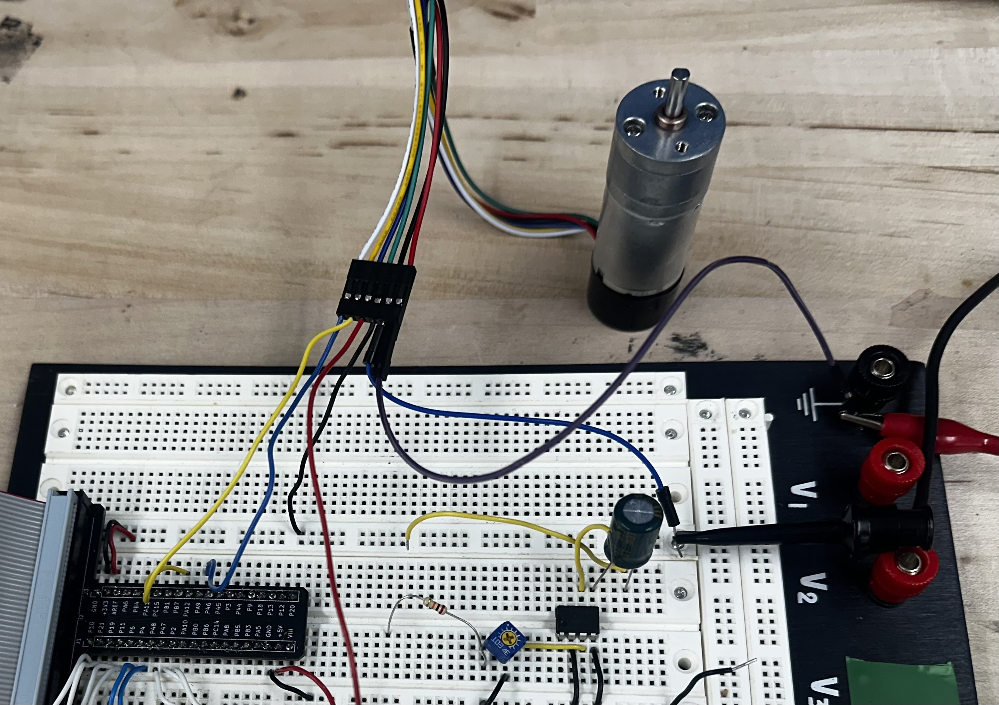
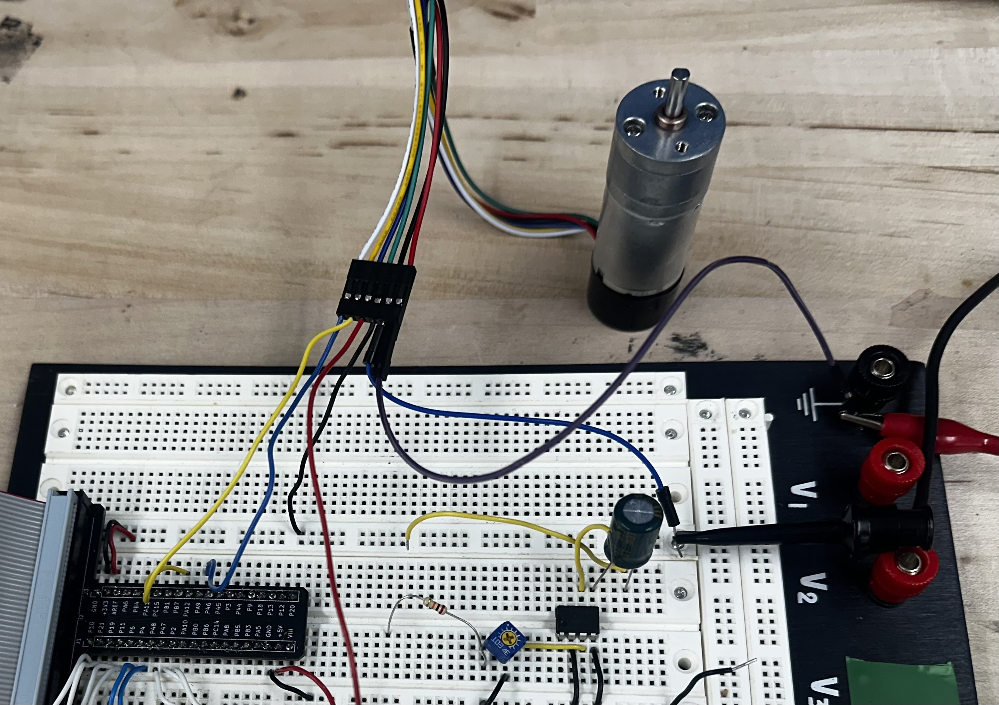
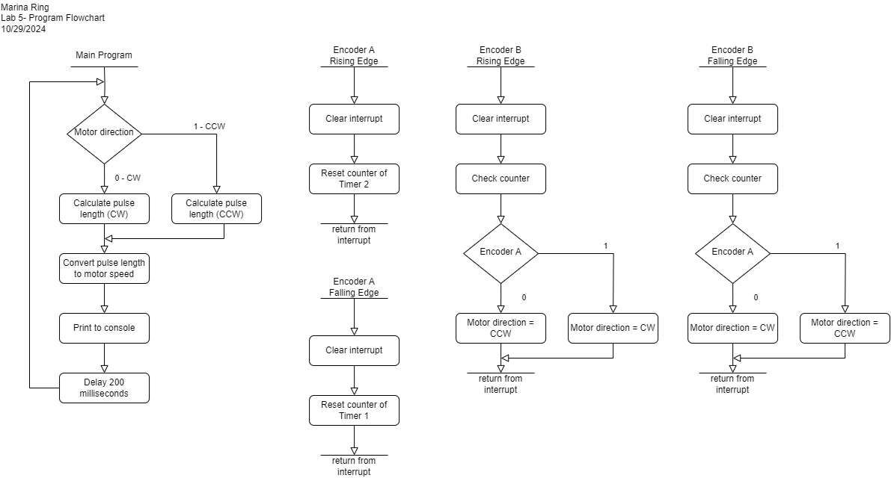
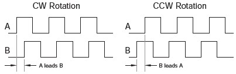

Lab 5: Interrupts
Introduction
After familiarizing ourselves with the microcontroller in Lab 4, we dove into exploring another functionality of microcontrollers: interrupts. In this lab, we used interrupts in conjuction with a quadrature motor encoder to determine the speed of a motor at various voltages. This lab taught us how to properly read and process fast changes in order to make the most accurate measurements as possible using our STM32 microcontrollers. See the E155 Lab 5 Page for a more detailed overview of the specifications and instructions for this lab.
All code written for this lab can be found on my E155 Lab 5 Repository on Github.
Setup and Circuitry
The circuitry for this lab was even simpler than the last lab. I was able to connect the motor encoder directly to the MCU GPIO pins. A variable DC voltage +/- Vss was applied
at the positive terminal of the motor using a power supply. A diagram is shown below along with a photo of the set up in real life.
 

Coding and Calculations
I used interrupts in order to measure motor speed quickly and accurately. Interrupts allowed me to overcome limitations of direct polling, as my measurements were taken as soon as encoder signals changed, in comparison to polling. If I used polling, the speed of taking measurements would depend on the speed it would take other commands in my loop to evaluate. I could run into timing issues, potentially resulting in a reported slower-than-expected motor speed. By using interrupts, I ensure that my measurements correspond exactly to when the encoder signals change and that I can make measurements anytime the encoder signals change, even if other code is evaluating.
In order to get the most accurate measurement of speed, I used all edges of the pulse. I set up four interrupts, one for the rising and falling edge for each of the two signals coming from the encoder.
The first signal coming from the encoder, "Encoder A", was used to reset counters that kept track of time between edges. This signal was treated as the first edge of our signal.
The second signal coming from the encoder, "Encoder B", was treated as the second edge of our signal. It was used to check the counter values since they had been reset and to determine the
direction of our motor spinning. The flowchart for the program I implemented is shown below.

I calculated speed of the motor by tracking how high a counter iterated between the edges of the encoder signals. Below is a graphic illustrating how the two encoder signals compare.

Based on this diagram, we can come up with two equations for pulse length in terms of clock periods: \[ l_{pulse, CCW} = \frac{4}{3} * 0.5 * (counter1 + counter2) \] \[ l_{pulse, CW} = 4 * 0.5 * (counter1 + counter2) \] These equations use an average between measuring based on distance between rising edges and distance between falling edges in order to be more responsive to sudden changes. Then, pulse length can be turned into a speed of revolutions per minute based on the specs of the motor, where there are 120 pulses per revolution, and converting pulse lengths into seconds. \[ v_{motor} = \frac{f_{clk}}{120 * l_{pulse}} \]
Verification
I used the oscilliscope to verify the readings that were being output to the console window. I tested three different
speeds using three different input voltages to the motor: 4V, 10V, and 15V.
4V -


10V -


15V -


In these images, you can see that the values for the speed of the motor in rev/s generally had a variation of 0.5 rev/s for slower speeds and up to 1 rev/s for faster speeds. These measurements were taken before implementing an average between measurements taken on the falling edge and measurements taken on the rising edge, so values became even more stable afterwards. There was also no way for me to guarantee I capture the signal at the same time in the console and the oscilliscope, so that may explain differences between the oscilliscopes value and the console values. Even so, the values shown on the console and the frequency measured by the oscilliscope matched up fairly well. I also attempted pulsing the voltage into the motor as well as input very high voltages (20 V) and very low voltages (1 V) and still saw good results.
Therefore, I can say that I successfully compiled and uploaded my code to the STM32 microcontroller and that the design meets all of the requirements.
This lab took me an estimated 16 hours to complete.